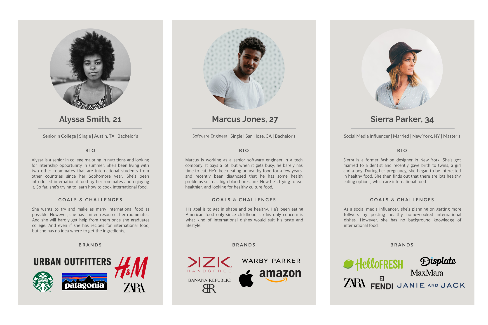
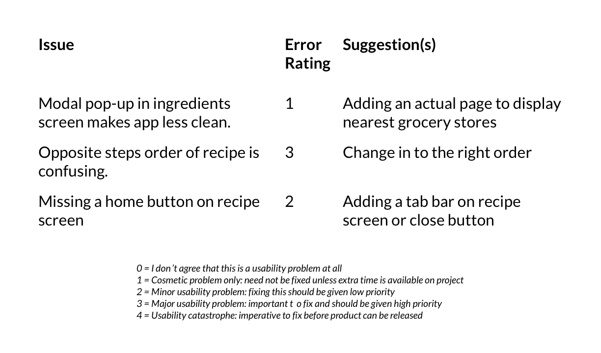

Interecipes
UX/UI, User Research
Overview
There’s a growing diversity in American food around the big cities. Not only there are international cuisines expanding throughout the states, there are also changes in our tables at home. I like trying diverse cuisines as well as cooking diverse meals. I took a close look at recipe apps and chose to design a recipe app that allows users to learn to cook diverse food at ease.
Research
Secondary Research - Competitive Analysis

Primary Research
To better understand the perspective of the target user, I interviewed 3 people. And here are research assumptions:
-
Behavior - Usually cook a very few times in a certain time - Don’t use well-known recipe applications - Prefer video recipe and simple design of the app - Open to authentic international cuisines
-
Needs & Goals - Precise information about food and its culture - Cooking instructions with photos & videos
-
Participant Frustrations People know where to find the international recipes but not the ingredients.
-
Quotes & Facts “I like the apps with simple interface design. If the app feels cluttered, I forget what I was trying to do.”
Persona Creation
Information Archtecture
Task Flow

User Flow

Test
Wireframe: Low-Fidelity

Usability Testing
The goal of this test is to observe if users understand the project and complete basic initial functions such as logging in, answering questionnaires, searching for recipes, and posting recipe.
From the user testing, I could determine if users are willing to give their personal information such as their dietrary preferences, measure how quickly users navigate desired recipe, measure how easily users access grocery shopping list and find nearby markets, and measure how easily users to create their own recipe.
And here’s results synthesis & error rating:
Visual Design
Moodboard

Wireframes: High-Fidelity
Style Guide

Responsive Design

Prototype